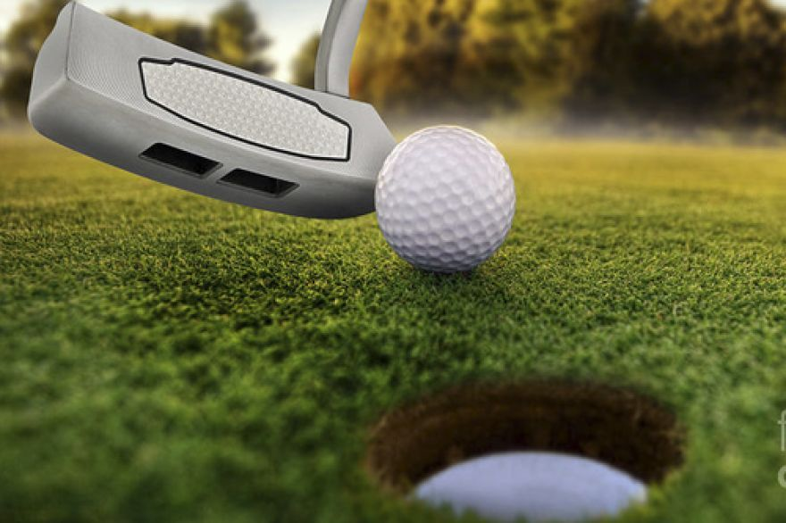
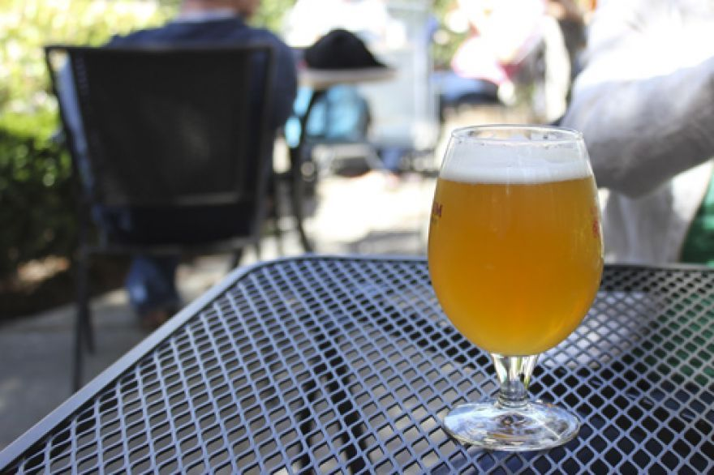

Practice range
The practice area is open to everyone. A bucket of 40 balls costs €3.

A course among the pines, right in town and just over a kilometre from the sea. For your very first shots or for sharpening your short game.
Las Rejas is a 9-hole par-3 course right inside the town of Benidorm. The ideal place to take up golf, and for experienced players to perfect their short game.
The layout is designed to keep every round fun: on each hole you practise your approach shots. The carefully placed par 3s are of medium difficulty, so beginners and experienced players both enjoy them.

The practice area is open to everyone. A bucket of 40 balls costs €3.

Lessons for the whole family. Make the most of the Benidorm weather and learn to play.

Play the 9 holes without being a member. We recommend booking ahead by phone.

Our terrace bar is open to everyone. Have a drink before or after your round.
Prices in euros. To book your tee time, call us on +34 966 889 775.
Behind Avenida Vicente Pérez Devesa, level with the IES Mediterrània secondary school, just over 1,000 metres from the beach.
Las Rejas Open ClubSolar panel installation on the golf course, funded by the European Union (NextGenerationEU) under Spain's Recovery, Transformation and Resilience Plan.